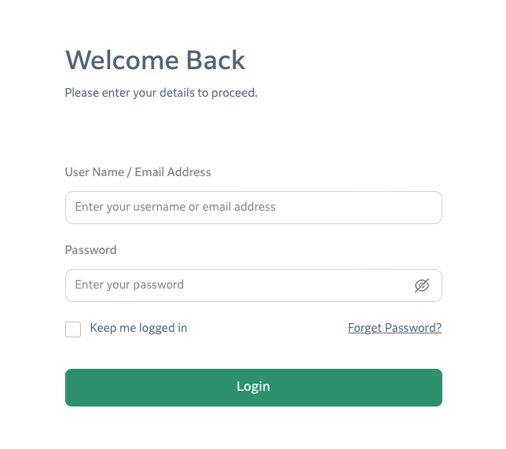
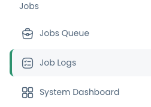
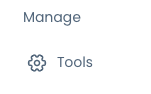
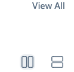
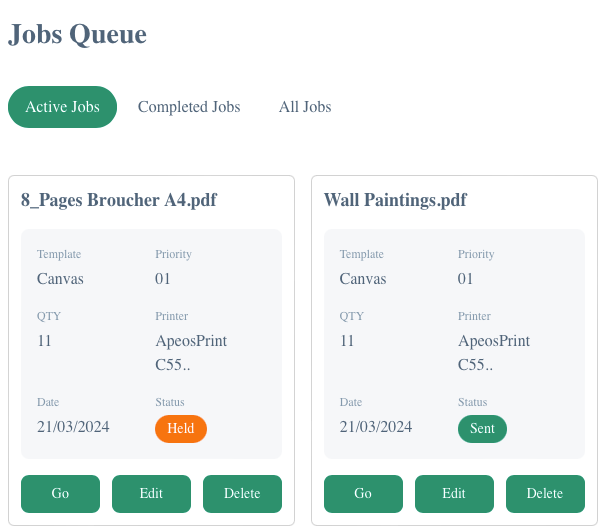
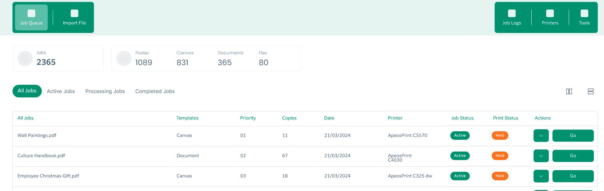
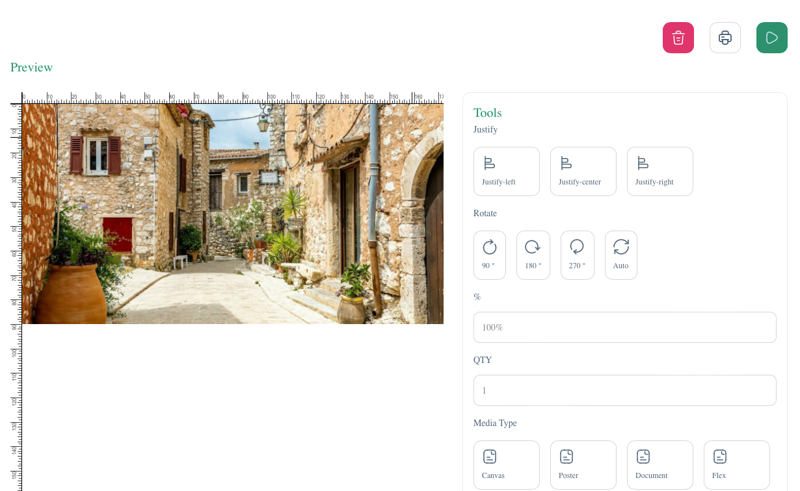

The Epson Wide format printer is powered on and ready to print.
You have artwork arriving from the FUJIFILM IK server or a file to manually upload.
*note that there may be slight interface differences between the help file and your version of PrintStation WF.
Logging In
Using the log in screen please enter your local credentials to access PrintStation WF.
1. [ ] #### does "Forget Password" function?
 *see "The Menu" below for Dark Mode schema.
Logout using the menu in the top right corner
The Menu Bar
To the right of the top-menu we have a radio switch for Dark Mode and Light Mode.
Job Logs provide the history of printed jobs and can be exported out if needed.

Tools is a function to create specific job templates, this is also pre-set uo by the service team at installation. 
Job Queues
The Job Queues are listed here. Active Jobs are those waiting to be released or starting to print, Remaining Jobs are those only waiting to print, Completed Jobs are those completed and not yet removed from the system. Reprints can be performed from Completed Jobs. All JObs will display all jobs available on the system at this point in time. Historic jobs may be removed and may not always be displayed here. *From time to time the system may perform a job cleanup and older jobs will be removed from the system to free up space.
Above the job list there are a couple of extra buttons, "View All" which shows or hides the title menu of job list. Also there are two icons which control the view mode for your preference in viewing, tile view or list view.

How to Release a Print
Note, all jobs are submitted from the FUJIFILM IK server with a specified media and size that have already been set.
From the Jobs List, select the job that you wish to release and use the job GO icon, this will start the job.
If you wish to delete the job, choose the job Actions button (down arrow) then use the Delete icon
If the print has started you may delete the job from the IK Print Station interface, but as it may already be printing you may need to cancel the job on the printer as well.
If you wish to edit the job, select job Actions button (down arrow) then Edit which will open the job edit screen.
Here you can rotate and scale. 
How to Justify
Justify places the printable image location to either edge or the center of the media.
How to rotate & scale
From the job Actions button choose Edit
From the edit screen, choose a rotation to suit the artwork. note that rotating the artwork relative to the media may cause a slight reduction of the image quality, generally this is not going to be an issue when printing but if results are a little pixelated or the file resolution is small then avoid rotating.
Rotating the artwork is generally done to preserve best use of the media roll, generally most artwork is rotated to fit the longer size alone the media width except artwork that may be too large to fit across the media such as an A0 size print on a smaller machine, in which case a 90* rotation may allow the artwork to fit.
To scale an item, choose from the scaling options. Scaling to media width will maximise the use of the media, printing almost to the edge.
Other Queues
Next to the Active Jobs button you can see the All Jobs and Completed Jobs links. These take you to the relevant queues, to re-submit a completed job, go to the Completed Jobs queue and press the Go button again.